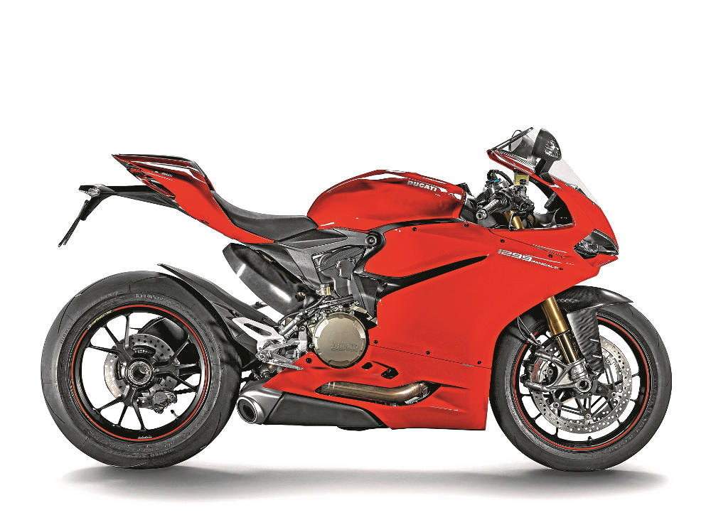

Wyposażenie
Motocykl wyposażony jest w aluminiowe zawieszenie Marzocchi z przodu (średnica 50mm) i amortyzator Sachs z tyłu,
kontrolę trakcji , (Ducati Traction Control), quick shifter (Ducati Quick Shift), kontrolę hamowania silnikiem (Engine
Brake Control) i różne mapy zapłonu (Ducati Riding Modes).
Wersje
1299 Panigale – podstawowa wersja motocykla. Jako wyposażenie opcjonalne dostępny ABS.
1299 Panigale S – DES (Ducati Electronic Suspension) - elektronicznie sterowane zawieszenie Öhlins z przodu z tyłu,
regulowany amortyzator skrętu Öhlins, kute felgi Marchesini, przedni błotnik wykonany z włókna węglowego, światła
przednie LED i "Aero kit" – poszerzona górna część przedniej owiewki.
1299 Panigale S Tricolore – to co w wersji S, dodatkowo ABS w standardzie, tytanowy wyścigowy układ wydechowy Ducati
Performance, nowej generacji DDA+ (Ducati Data Analyzer +) – system pozwalający na zapis i odczyt specyfikacji jazdy, z
funkcją zapisu czasów okrążeń z wykorzystaniem GPS.
Diabelski młyn
Na torze Portimão są i ślepe wzniesienia, i kompresje, i diabelnie szybkie winkle, ale także strefy ostrego hamowania i
ciasne winkle. I właśnie tutaj większy moment obrotowy jest natychmiast odczuwalny. Będziesz pod wrażeniem, jak twin już
w środkowym zakresie obrotów wyrywa z zakrętów. Złapałem się na tym, że w niektórych miejscach włączałem trójkę zamiast
dwójki, żeby nie marnować później czasu na przebicie biegu. Na dodatek motocykl precyzyjnie reaguje na gaz, kontrola
trakcji, o ile musi zadziałać, robi to łagodnie, na wzniesieniach kontrola wheelie szybko sprowadza przednie koło na
ziemię.
A gdy na końcu prostej zaciski Brembo M50 mocno wgryzą się w tarcze o średnicy 330 mm, system rozpoznający stoppie
elegancko przytrzyma tył na nawierzchni. Na nowo zestrojony amortyzator pracuje znacznie bardziej komfortowo, co powinno
cię ucieszyć, jeśli jeździsz przede wszystkim po zwykłych drogach. Niestety, podczas szybkich zmian kierunku i ostrego
hamowania czuć nerwowość. Czyżby nadszedł czas, by z pięciu ustawień, jakie mają półaktywne zawieszenia, wybrać to
najtwardsze? Technik Öhlinsa poradził, aby włączyć od razu tryb Race.
Tor jest już suchy, więc tak robię. A to oznacza wyłączenie ABS-u na winkle i ABS-u tylnego koła oraz redukcję kontroli
wheelie, bardzo bezpośrednią reakcję na gaz oraz twarde zestrojenie zawieszeń. Teraz Panigale odlatuje jak rakieta. Po
odkręceniu manetki chciwie łyka metr za metrem, na zakrętach pokonywanych na drugim biegu zachwyca precyzją prowadzenia,
a przy szybkich naprzemiennych złożeniach i ostrym hamowaniu zachowuje się znacznie spokojniej. Przyczepność tylnego
koła jest gigantyczna, a mimo to podczas ostrego przyspieszania na wyjściu z zakrętu nie trzeba dużej siły, by utrzymać
Dukata na właściwym torze jazdy.
V-dwójka jak oszalała wkręca się na coraz wyższe obroty, dopiero od 10 000 obr/min jej szaleństwo łagodnieje do tego
stopnia, że „1199” wydaje się tutaj trochę energiczniejsza. Ale mimo to w dalszym ciągu jest w niej coś z bestii, a
podczas przyspieszania na wzniesieniach i ostatniej prostej prowadzącej do mety ciągle jeszcze potrafi zatrzepotać
kierownicą. Dobrze wiedzieć, że regulowany amortyzator skrętu jest pod kontrolą elektroniki.
Tryb Race oznacza także pracę kontroli wheelie na drugim pod względem ostrości stopniu. W takiej sytuacji maszyna
oczekuje od ciebie większej aktywności, gdy np. Panigale przy prędkości 250 km/h na wzniesieniu odrywa przednie koło od
nawierzchni, a pęd powietrza podnosi go jeszcze bardziej. Koncentracja jest wtedy tym potrzebniejsza, że maszyna wlatuje
w strefę hamowania z prędkością 290 km/h. Tutaj gwałtownie daję po heblach, mimo to sprzęt z całkowitym spokojem i
stabilnie pozostaje na swoim torze, a zrzucanie biegów bez użycia sprzęgła to jest to!

Ciężka tyrka
Mimo że Panigale jest najzwrotniejszym do tej pory sportowym Ducati, szybka jazda i tak dość mocno angażuje pod względem
fizycznym. Dzięki wyższemu momentowi obrotowemu i dopracowanej geometrii, 1299 Panigale sprawia wrażenie sprzęta
elastyczniejszejszego, przystępniejszego; po prostu jest lepszy. A przy tym Dukat nie zatracił brutalności, jeśli chodzi
o sposób przekazywania mocy. Wersja wyposażona w otwarty tytanowy wydech Termignoni generuje jeszcze lepszy moment
obrotowy i jeszcze lepiej reaguje na gaz. Niestety, przyjemność poznawania bike’a nie trwała zbyt długo: deszcz
przypomniał sobie o nas i bezwzględnie zakończył test. Pierwsza jazda na 1299 Panigale S udowodniła, że jest to sprzęt
uzbrojony po zęby, który nie podda się bez walki.
Linki zewnętrzne
Ducati 1299 Panigale – test
Ducati
Panigale V4S kontra Panigale 1299 S